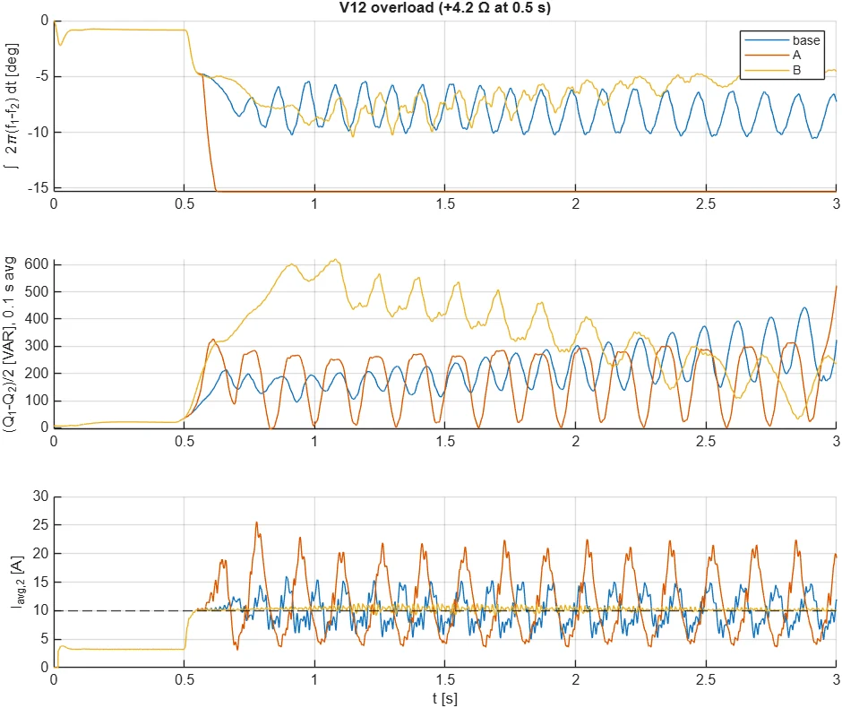

How it was built · Six mistakes
What went wrong, and how I found it
Six things in this project were wrong for a while, some of them for months. Each section below has the same parts: what I saw, what I assumed, how I found the real cause, the fix, and the numbers. All of it is simulation and design work. No hardware was built.
1. The "loss of synchronisation" that was not one
What I saw. Two inverters share one bus. I added a load too large for the pair, so both ran into their 10 A current limit. Two seconds later the two controllers reported different frequencies, 59.80 Hz and 59.74 Hz, and reactive power was circulating between them.1
What I assumed. I wrote it down as a loss of synchronisation: the limited inverters can no longer push power according to their angle, so their virtual rotors drift apart. That is a real effect, and it fitted the two numbers I was looking at.
How I found the real cause. A longer run showed that nothing was drifting. Everything was cycling, with a period of about 0.12 s: the limiters swung between 0.42 and 1.0, and the current between 2 A and 18 A.2 A frequency difference is the rate of change of a phase difference, so I integrated it:
Δθ(t) = ∫ 2π·(f1 − f2) dt
If the 0.06 Hz split were real, the phase would grow by 0.06 × 360° = 21.6° every second and never stop. It stayed between −7° and −9°.3 The inverters were in step the whole time. My two frequencies were a snapshot of an oscillation: two integrating limiters fighting through the shared bus. One cuts its voltage, the other picks up the current, then they swap.
One test settled it. I froze the swing equation while a unit was limiting, which held the two frequencies together, and the cycle was still there, with current peaks up to 24 A.4
The fix. A different kind of limiter. The controller subtracts a virtual resistance drop, Rv·i, from its voltage command, and Rv grows with the over-current. It behaves like a resistor that appears only when needed, so the two units stop trading the current back and forth.
| Integrating limiters | Frequencies forced equal | Virtual resistance (V12) | |
|---|---|---|---|
| Inverter 2 current, limit 10 A | swings 4.9 to 14.9 A | swings 3.6 to 22 A | 10.14 ± 0.15 A |
| Limit cycle | yes, about 0.12 s | yes, about 0.16 s | none |
| Phase difference | −7° to −9° | −15.3°, fixed | −4.5° to −7° |
| Power delivered | about 1.1 kW, cycling | 0.66 kW | 2.56 kW |
Sources for the table: decision log D9 and D11.5 I also changed the pass criterion. Instead of comparing two frequency readings, I now require the phase difference to stay bounded (less than 5° of drift per second) and the 0.1 s average of the frequency difference to stay under 0.05 Hz. V12 gave 1.9° and 0.038 Hz.3

2. The April result that looked fine and was backwards
What I saw. In April the two-inverter model (V10) seemed to pass. The inverters have different damping, D = 150 and D = 300, and after the load step they carried different amounts of power in a ratio that was not far from 2.
What I assumed. I wanted roughly 2 to 1, I got something near it, and I explained away the rest: I wrote that D "affects damping, not pure gain", so an inexact ratio was to be expected.6
How I found the real cause. In November I did the steady state by hand. When the frequency has settled, dω/dt = 0 and the swing equation becomes
P = P0 − D·(ω − ω0)
Both inverters sit at the same frequency, so the one with the larger D must change its power more, and exactly twice as much here. My April result had the smaller D carrying more. The theory was fine. The model had two bugs.6
First, the phase angle was computed as θ = ω·t. That is only right if the frequency never changes. With droop or a swing equation the frequency moves, and then dθ/dt = ω + t·dω/dt: every small change in commanded frequency is multiplied by the elapsed time and shows up as a phase jump.7
Second, the load step was backwards. The Simscape breaker opens when its control signal is high. My step went from 0 to 1 at 0.5 s, so the extra load was connected from the start and removed at 0.5 s. I had been reading "after the step" as the heavy case when it was the light one. The saved file also had a 1 Ω base load where I meant 8.4 Ω, and a 6 A limit that was below the load demand.8
The fix. The phase now comes from an integrator, θ = ∫2πf dt. The breaker step is reversed, the base load is 8.4 Ω and the limit is 10 A. The fixes live in copies of the models, and the April files are untouched.
| Check | Result | Source |
|---|---|---|
| Hand calculation against the corrected model, 1 Ω test load | P₁ = 554 W by hand, 553 W simulated | Manual V10, 2026-11-11 |
| Corrected V10, load step inside the current rating | 404.0 → 702.5 W and 557.5 → 1155.2 W, both 59.837 → 59.520 Hz, ratio 2.003 | D5 |
| Final model V13, same step | 385.2 → 670.0 W and 520.3 → 1090.0 W, ratio 2.000 | V13, D26 |
The first corrected run gave 2.02, but it used a step large enough to push inverter 2 into its current limit, so I repeated it with a smaller step.9
3. A hidden 17.7 V DC offset, in V7, V10 and V12
What I saw. Nothing, which is the problem. The output looked like three sine waves. I only looked closer because I was checking something else: whether the voltage controller was saturated.
What I assumed. That a PI controller on each phase could only help, because the integral part removes steady error. I had even written that the controller was pinned at its limit, which turned out to be wrong too: it was not saturated, just weak.10
How I found the real cause. I logged the controller output and the capacitor voltages for 0.3 s and looked at the averages. A sine should average to zero. These did not: the controller output had a mean of +0.089 on phase a and −0.044 on phases b and c. On the capacitors that was +17.7 V DC on phase a and −8.9 V on b and c, in both inverters.11
The cause is the integrator. It integrates a sine-shaped error of amplitude A, starting at whatever phase φ0 the sine has when the simulation begins:
Ki·∫ A·sin(ωt + φ0) dt = (A·Ki / ω)·[cos φ0 − cos(ωt + φ0)]
The second term is a sine. The first is a constant that never goes away. With A = 346, Ki = 0.1 and ω = 377 rad/s it is 0.092·cos φ0. Phase a starts at 0°, where the cosine is 1. Phases b and c start at ∓120°, where it is −0.5. That is the +0.089 and the −0.044, including the factor of minus one half. The feedback was far too weak to pull it back.11
Offset = 0.092 × cos(0°) = +0.092 of full modulation, about +18.4 V DC at 200 V per unit.
There was a clue in April that I did not follow. My notes for the dq-frame version (V8) list "zero DC offset" as a result and compare it with V7.12 In the dq frame the PI controllers work on steady values, not on sines, so this cannot happen there. I took it as a nice property of V8 and did not ask why V7 had an offset to begin with. V10 and V12 were built on V7 and inherited it.
The fix. No integrator. The V13 voltage loop is a feed-forward plus a proportional term, u = Kff·r + Kp·(r − y), with Kff = 1/200 = 0.005 and Kp = 0.002.
The offset had been pushing about 2 A of direct current through the 8.4 Ω load in every run.11 More on the loop itself: The voltage loop.
4. Better voltage control made parallel operation worse
What I saw. With the voltage loop repaired, I reran the overload test expecting less reactive power to circulate between the two inverters. In V12 it was 181 VAR. With the better loop it was 308 VAR. My target was under 50.13
What I assumed. That the circulating power came from a voltage loop too weak to make the voltage droop work, so a real loop plus droop would fix it.
How I found the real cause. I switched the voltage droop off as a control experiment. The circulating power went up to 872 VAR, so the droop was helping and was not the problem.13 The problem was what the new loop had removed. In V12 the voltage was barely regulated, so the 2 mH filter inductor (0.75 Ω at 60 Hz) sat between the two sources and soaked up small voltage differences. In V13 the capacitor voltage itself is held, so the stiff source now sits after the inductor. Between the two units only the short ties are left, 0.05 Ω and 0.075 Ω of reactance each. A few volts of mismatch across that little impedance drives hundreds of VAR.
The fix. Put an impedance back, in the controller. Each inverter subtracts a virtual reactance drop from its voltage command at all times. With 0.75 Ω on both, the circulating power fell to 51 VAR. Inverter 2 carries twice the current of inverter 1, so with equal reactances its drop is twice as large. Giving it half the reactance, 0.375 Ω, makes the two drops equal, and the result is 11 VAR.14
One more thing went wrong inside this fix. I had added a 10 ms low-pass filter to calm the virtual resistance. In the fault test that filter caused a growing oscillation near 35 Hz, with current peaks of 12.7 A. I removed it, and the fault current settled cleanly on 10.0 A.14
More on this: Two inverters in parallel, and virtual impedance.
5. The hand calculation said 0.39 K/W. The FEA said 0.47.
What I saw. I sized the heatsink by hand and got 0.39 K/W from heatsink to air. Then I ran a steady-state thermal FEA in Ansys with the heavy-load loss of 77.3 W. The heatsink averaged 63.8 °C, but directly under the power module it reached 76.5 °C.16
What I assumed. The hand calculation treats the heatsink base as one temperature. That is the usual textbook assumption, and I did not question it.
How I found the real cause. The FEA showed it directly. The module is 36 × 21 mm on a 120 × 100 mm base, so the heat enters through a small patch and has to spread sideways through the aluminium before it reaches the outer fins. That costs temperature. Measured from the 40 °C ambient:
(76.5 − 40) / 77.3 = 0.47 K/W under the module, (63.8 − 40) / 77.3 = 0.31 K/W on average
The hot spot is about 13 K above the average, and the module sits exactly on it. Against my hand number, the heatsink is about 20 % worse where it matters.16
The fix. I put 0.47 K/W into the thermal model, which is the conservative choice, and reran the mission. The heavy-load junction temperature went from 104.5 °C to 110.6 °C. It is still under the 125 °C design limit, with 14 K of margin, and the fan-failure case is 119.2 °C.17 The FEA pictures and the full thermal path are on Packaging and thermal.
6. One missing 10 µs delay: 23 minutes instead of under 3
What I saw. The two-inverter model took between 8 and 23 minutes per run, and it printed warnings about an algebraic loop.18
What I assumed. That it was slow because of its small solver step, and that the warning was harmless. My April notes call it "expected and benign".18
How I found the real cause. My own build instructions for the current limiter say to put a one-sample delay between the limiter and the point where it scales the modulation. When I opened the saved models in November, the delay was not there. It had never been placed.19 Without it, the limiter output changes the modulation, the modulation changes the current, and the current changes the limiter output, all at the same instant. The solver has to iterate around that loop at every time step.
The fix. One Unit Delay block, with a sample time of 1e-5 s, in each limiter.
| Model | Before | After | Source |
|---|---|---|---|
| V10_fixed, two inverters | 1386 s (23 min) | 143 s (under 3 min) | D3 |
| V6_fixed | 89 s, 3 warnings | 29 s, 0 warnings | D3 |
| V7_fixed | 44 s, 2 warnings | 11 s, 0 warnings | D3 |
I then made the same mistake once more. The first version of the virtual resistance in V12 fed the measured current straight into the modulation, and a 3 s run had not finished after 35 minutes. One delay per phase fixed that as well.20
What I do differently now
These six have things in common. In most of them the first reading of a plot was wrong, and the way out was one more logged signal or one calculation by hand. So:
- I check the phase difference, not two frequency readings, before I say anything about synchronisation.
- I work out the steady state by hand before I trust a plot that roughly agrees with what I hoped for.
- I log signals inside the controller and look at their averages, not only at the output waveform.
- I score every run with the same saved script, so a number can always be reproduced.
- I treat a solver warning as a bug until I know why it is there.
Sources for this page
- Decision log D5 (first overload run on V10_cl, with the original diagnosis). ↩
- Decision log D7,
compare_v12_base_4p2.txt. ↩ - Decision log D9. Extensions manual, V12 Step 1 and Step 4, corrections of 2026-11-13. The 21.6° per second is my arithmetic from the two frequencies in D5. ↩
- Decision log D8,
compare_v12_A_4p2.txt. ↩ - V12. Decision log D9 and D11,
compare_v12_B_4p2.txt, figurev12_AB_compare.png. ↩ - Extensions manual, V10 validation (April text) and the correction of 2026-11-11 below it. ↩
- Extensions manual, V7 Step 4, correction of 2026-11-11 (phase-angle bug in V4 to V7 and V10). ↩
- Extensions manual, V10 Step 8, corrections of 2026-11-11. ↩
- Extensions manual, V10, corrected results of 2026-11-11 and update of 2026-11-13. Decision log D5. ↩
- Decision log D12 (correction of D9 and D11). ↩
- Decision log D13,
probe_v13_base.txt. ↩ - Extensions manual, V8 objective and validation. Session debrief, April 20, 2026. ↩
- Decision log D21,
compare_v13pi_4p2.txtandcompare_v13noKq_4p2.txt. Target from the extensions manual, V13 Step 4. ↩ - Decision log D22 to D26 (virtual reactance sweep, the low-pass filter and its removal). Final value: V13, D26. ↩
- Decision log D18 (recomputed with
gfi_metrics.m). ↩ - Extensions manual, V11 Step 3 (hand calculation) and Step 5 (FEA, update of 2026-11-12). Decision log D1. ↩
- Decision log D1,
mission_results.txt. The 104.5 °C figure is from the extensions manual, V11 Step 2. ↩ - Extensions manual, V10 Step 8, note added 2026-11-11. Session debrief, April 21, 2026. ↩
- Decision log D3,
health_log_fixed.txt. Extensions manual, V6 Step 3, correction of 2026-11-13. ↩ - Decision log D9. Extensions manual, V12 Step 3, correction of 2026-11-13. ↩